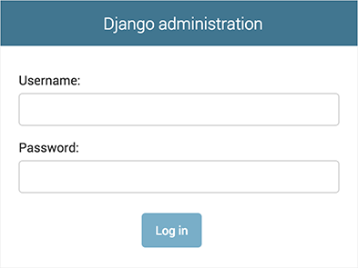

Écriture de votre première application Django, 2ème partie¶
Ce tutoriel commence là où le tutoriel 1 s’achève. Nous allons configurer la base de données, créer le premier modèle et aborder une introduction rapide au site d’administration généré automatiquement par Django.
Où obtenir de l’aide :
Si vous rencontrez des problèmes dans le parcours de ce tutoriel, rendez-vous dans la section Obtenir de l’aide de la FAQ.
Configuration de la base de données¶
Maintenant, ouvrez mysite/settings.py. C’est un module Python tout à fait normal, avec des variables de module qui représentent des réglages de Django.
La configuration par défaut utilise SQLite. Si vous débutez avec les bases de données ou que vous voulez juste essayer Django, il s’agit du choix le plus simple. SQLite est inclus dans Python, vous n’aurez donc rien d’autre à installer pour utiliser ce type de base de données. Lorsque vous démarrez votre premier projet réel, cependant, vous pouvez utiliser une base de données plus résistante à la charge comme PostgreSQL, afin d’éviter les maux de tête consécutifs au changement perpétuel d’une base de données à l’autre.
Si vous souhaitez utiliser une autre base de données, installez le connecteur de base de données approprié, et changez les clés suivantes dans l’élément 'default' de DATABASES pour indiquer les paramètres de connexion de votre base de données :
ENGINE– Choisissez parmi'django.db.backends.sqlite3','django.db.backends.postgresql','django.db.backends.mysql'ou'django.db.backends.oracle'. D’autres moteurs sont également disponibles.NAME– Le nom de votre base de données. Si vous utilisez SQLite, la base de données sera un fichier sur votre ordinateur. Dans ce cas,NAMEdoit être le chemin absolu complet de celui-ci, y compris le nom de fichier. La valeur par défaut,BASE_DIR / 'db.sqlite3', stocke ce fichier dans le répertoire de votre projet.
Si vous utilisez une autre base de données que SQLite, des réglages supplémentaires doivent être indiqués, comme USER, PASSWORD ou HOST. Pour plus de détails, consultez la documentation de référence de DATABASES.
Pour les bases de données autres que SQLite
Si vous utilisez une base de données autre que SQLite, assurez-vous maintenant d’avoir créé la base de données. Faites-le avec CREATE DATABASE nom_de_la_base; dans le shell interactif de votre base de données.
Vérifiez également que l’utilisateur de base de données indiqué dans le fichier mysite/settings.py possède la permission de créer des bases de données. Cela permet de créer automatiquement une base de données de test qui sera nécessaire plus tard dans le tutoriel.
Si vous utilisez SQLite, vous n’avez rien à créer à l’avance - le fichier de la base de données sera automatiquement créé lorsque ce sera nécessaire.
Puisque vous êtes en train d’éditer mysite/settings.py, définissez TIME_ZONE selon votre fuseau horaire.
Notez également le réglage INSTALLED_APPS au début du fichier. Cette variable contient le nom des applications Django qui sont actives dans cette instance de Django. Les applications peuvent être utilisées dans des projets différents, et vous pouvez empaqueter et distribuer les vôtres pour que d’autres les utilisent dans leurs projets.
Par défaut, INSTALLED_APPS contient les applications suivantes, qui sont toutes contenues dans Django :
django.contrib.admin– Le site d’administration. Vous l’utiliserez très bientôt.django.contrib.auth– Un système d’authentification.django.contrib.contenttypes– Une structure pour les types de contenu (content types).django.contrib.sessions– Un cadre pour les sessions.django.contrib.messages– Un cadre pour l’envoi de messages.django.contrib.staticfiles– Une structure pour la prise en charge des fichiers statiques.
Ces applications sont incluses par défaut par commodité parce que ce sont les plus communément utilisées.
Certaines de ces applications utilisent toutefois au moins une table de la base de données, donc il nous faut créer les tables dans la base avant de pouvoir les utiliser. Pour ce faire, lancez la commande suivante :
$ python manage.py migrate
...\> py manage.py migrate
La commande migrate examine le réglage INSTALLED_APPS et crée les tables de base de données nécessaires en fonction des réglages de base de données dans votre fichier mysite/settings.py et des migrations de base de données contenues dans l’application (nous les aborderons plus tard). Vous verrez apparaître un message pour chaque migration appliquée. Si cela vous intéresse, lancez le client en ligne de commande de votre base de données et tapez \dt (PostgreSQL), SHOW TABLES; (MariaDB, MySQL), .schema (SQLite) ou SELECT TABLE_NAME FROM USER_TABLES; (Oracle) pour afficher les tables créées par Django.
Pour les minimalistes
Comme il a été indiqué ci-dessus, les applications incluses par défaut sont les plus communes, mais tout le monde n’en a pas forcément besoin. Si vous n’avez pas besoin d’une d’entre elles (ou de toutes), vous êtes libre de commenter ou effacer les lignes concernées du règlage INSTALLED_APPS avant de lancer migrate. La commande migrate n’exécutera les migrations que pour les applications listées dans INSTALLED_APPS.
Création des modèles¶
Nous allons maintenant définir les modèles – essentiellement, le schéma de base de données, avec quelques métadonnées supplémentaires.
Philosophie
Un modèle est la source d’information unique et définitive pour vos données. Il contient les champs essentiels et le comportement attendu des données que vous stockerez. Django respecte la philosophie DRY (Don’t Repeat Yourself, « ne vous répétez pas »). Le but est de définir le modèle des données à un seul endroit, et ensuite de dériver automatiquement ce qui est nécessaire à partir de celui-ci.
Ceci inclut les migrations. Au contraire de Ruby On Rails, par exemple, les migrations sont entièrement dérivées du fichier des modèles et ne sont au fond qu’un historique que Django peut parcourir pour mettre à jour le schéma de la base de données pour qu’il corresponde aux modèles actuels.
Dans notre application de sondage, nous allons créer deux modèles : Question et Choice (choix). Une Question possède une question et une date de mise en ligne. Un choix a deux champs : le texte représentant le choix et le décompte des votes. Chaque choix est associé à une Question.
Ces concepts sont représentés par des classes Python. Éditez le fichier polls/models.py de façon à ce qu’il ressemble à ceci :
from django.db import models
class Question(models.Model):
question_text = models.CharField(max_length=200)
pub_date = models.DateTimeField('date published')
class Choice(models.Model):
question = models.ForeignKey(Question, on_delete=models.CASCADE)
choice_text = models.CharField(max_length=200)
votes = models.IntegerField(default=0)
Ici, chaque modèle est représenté par une classe qui hérite de django.db.models.Model. Chaque modèle possède des variables de classe, chacune d’entre elles représentant un champ de la base de données pour ce modèle.
Chaque champ est représenté par une instance d’une classe Field – par exemple, CharField pour les champs de type caractère, et DateTimeField pour les champs date et heure. Cela indique à Django le type de données que contient chaque champ.
Le nom de chaque instance de Field (par exemple, question_text ou pub_date) est le nom du champ en interne. Vous l’utiliserez dans votre code Python et votre base de données l’utilisera comme nom de colonne.
Vous pouvez utiliser le premier paramètre de position (facultatif) d’un Field pour donner un nom plus lisible au champ. C’est utilisé par le système d’introspection de Django, et aussi pour la documentation. Si ce paramètre est absent, Django utilisera le nom du champ interne. Dans l’exemple, nous n’avons défini qu’un seul nom plus lisible, pour Question.pub_date. Pour tous les autres champs, nous avons considéré que le nom interne était suffisamment lisible.
Certaines classes Field possèdent des paramètres obligatoires. La classe CharField, par exemple, a besoin d’un attribut max_length. Ce n’est pas seulement utilisé dans le schéma de base de la base de données, mais également pour valider les champs, comme nous allons voir prochainement.
Un champ Field peut aussi autoriser des paramètres facultatifs ; dans notre cas, nous avons défini à 0 la valeur default de votes.
Finalement, notez que nous définissons une relation, en utilisant ForeignKey. Cela indique à Django que chaque vote (Choice) n’est relié qu’à une seule Question. Django propose tous les modèles classiques de relations : plusieurs-à-un, plusieurs-à-plusieurs, un-à-un.
Activation des modèles¶
Ce petit morceau de code décrivant les modèles fournit beaucoup d’informations à Django. Cela lui permet de :
- Créer un schéma de base de données (instructions
CREATE TABLE) pour cette application. - Créer une API Python d’accès aux bases de données pour accéder aux objets
QuestionetChoice.
Mais il faut d’abord indiquer à notre projet que l’application de sondages polls est installée.
Philosophie
Les applications de Django sont comme des pièces d’un jeu de construction : vous pouvez utiliser une application dans plusieurs projets, et vous pouvez distribuer les applications, parce qu’elles n’ont pas besoin d’être liées à une installation Django particulière.
Pour inclure l’application dans notre projet, nous avons besoin d’ajouter une référence à sa classe de configuration dans le réglage INSTALLED_APPS. La classe PollsConfig se trouve dans le fichier polls/apps.py, ce qui signifie que son chemin pointé est 'polls.apps.PollsConfig'. Modifiez le fichier mysite/settings.py et ajoutez ce chemin pointé au réglage INSTALLED_APPS. Il doit ressembler à ceci :
INSTALLED_APPS = [
'polls.apps.PollsConfig',
'django.contrib.admin',
'django.contrib.auth',
'django.contrib.contenttypes',
'django.contrib.sessions',
'django.contrib.messages',
'django.contrib.staticfiles',
]
Maintenant, Django sait qu’il doit inclure l’application polls. Exécutons une autre commande :
$ python manage.py makemigrations polls
...\> py manage.py makemigrations polls
Vous devriez voir quelque chose de similaire à ceci :
Migrations for 'polls':
polls/migrations/0001_initial.py
- Create model Question
- Create model Choice
En exécutant makemigrations, vous indiquez à Django que vous avez effectué des changements à vos modèles (dans ce cas, vous en avez créé) et que vous aimeriez que ces changements soient stockés sous forme de migration.
Les migrations sont le moyen utilisé par Django pour stocker les modifications de vos modèles (et donc de votre schéma de base de données), il s’agit de fichiers sur un disque. Vous pouvez consultez la migration pour vos nouveaux modèles si vous le voulez ; il s’agit du fichier polls/migrations/0001_initial.py. Soyez sans crainte, vous n’êtes pas censé les lire chaque fois que Django en crée, mais ils sont conçus pour être humainement lisibles au cas où vous auriez besoin d’adapter manuellement les processus de modification de Django.
Il existe une commande qui exécute les migrations et gère automatiquement votre schéma de base de données, elle s’appelle migrate. Nous y viendrons bientôt, mais tout d’abord, voyons les instructions SQL que la migration produit. La commande sqlmigrate accepte des noms de migrations et affiche le code SQL correspondant :
$ python manage.py sqlmigrate polls 0001
...\> py manage.py sqlmigrate polls 0001
Vous devriez voir quelque chose de similaire à ceci (remis en forme par souci de lisibilité) :
BEGIN;
--
-- Create model Question
--
CREATE TABLE "polls_question" (
"id" serial NOT NULL PRIMARY KEY,
"question_text" varchar(200) NOT NULL,
"pub_date" timestamp with time zone NOT NULL
);
--
-- Create model Choice
--
CREATE TABLE "polls_choice" (
"id" serial NOT NULL PRIMARY KEY,
"choice_text" varchar(200) NOT NULL,
"votes" integer NOT NULL,
"question_id" integer NOT NULL
);
ALTER TABLE "polls_choice"
ADD CONSTRAINT "polls_choice_question_id_c5b4b260_fk_polls_question_id"
FOREIGN KEY ("question_id")
REFERENCES "polls_question" ("id")
DEFERRABLE INITIALLY DEFERRED;
CREATE INDEX "polls_choice_question_id_c5b4b260" ON "polls_choice" ("question_id");
COMMIT;
Notez les points suivants :
- Ce que vous verrez dépendra de la base de données que vous utilisez. L’exemple ci-dessus est généré pour PostgreSQL.
- Les noms de tables sont générés automatiquement en combinant le nom de l’application (
polls) et le nom du modèle en minuscules –questionetchoice(vous pouvez modifier ce comportement). - Des clés primaires (ID) sont ajoutées automatiquement (vous pouvez modifier ceci également).
- Par convention, Django ajoute
"_id"au nom de champ de la clé étrangère. Et oui, vous pouvez aussi changer ça. - La relation de clé étrangère est rendue explicite par une contrainte
FOREIGN KEY. Ne prenez pas garde aux partiesDEFERRABLE; elles indiquent à PostgreSQL de ne pas contrôler la clé étrangère avant la fin de la transaction. - Ce que vous voyez est adapté à la base de données que vous utilisez. Ainsi, des champs spécifiques à celle-ci comme
auto_increment(MySQL),serial(PostgreSQL) ouinteger primary key autoincrement(SQLite) sont gérés pour vous automatiquement. Tout comme pour les guillemets autour des noms de champs (simples ou doubles). - La commande
sqlmigraten’exécute pas réellement la migration dans votre base de données - elle se contente de l’afficher à l’écran de façon à vous permettre de voir le code SQL que Django pense nécessaire. C’est utile pour savoir ce que Django s’apprête à faire ou si vous avez des administrateurs de base de données qui exigent des scripts SQL pour faire les modifications.
Si cela vous intéresse, vous pouvez aussi exécuter python manage.py check; cette commande vérifie la conformité de votre projet sans appliquer de migration et sans toucher à la base de données.
Maintenant, exécutez à nouveau la commande migrate pour créer les tables des modèles dans votre base de données :
$ python manage.py migrate
Operations to perform:
Apply all migrations: admin, auth, contenttypes, polls, sessions
Running migrations:
Rendering model states... DONE
Applying polls.0001_initial... OK
...\> py manage.py migrate
Operations to perform:
Apply all migrations: admin, auth, contenttypes, polls, sessions
Running migrations:
Rendering model states... DONE
Applying polls.0001_initial... OK
La commande migrate sélectionne toutes les migrations qui n’ont pas été appliquées (Django garde la trace des migrations appliquées en utilisant une table spéciale dans la base de données : django_migrations) puis les exécute dans la base de données, ce qui consiste essentiellement à synchroniser les changements des modèles avec le schéma de la base de données.
Les migrations sont très puissantes et permettent de gérer les changements de modèles dans le temps, au cours du développement d’un projet, sans devoir supprimer la base de données ou ses tables et en refaire de nouvelles. Une migration s’attache à mettre à jour la base de données en live, sans perte de données. Nous les aborderons plus en détails dans une partie ultérieure de ce didacticiel, mais pour l’instant, retenez le guide en trois étapes pour effectuer des modifications aux modèles :
- Modifiez les modèles (dans
models.py). - Exécutez
python manage.py makemigrationspour créer des migrations correspondant à ces changements. - Exécutez
python manage.py migratepour appliquer ces modifications à la base de données.
La raison de séparer les commandes pour créer et appliquer les migrations est que celles-ci vont être ajoutées dans votre système de gestion de versions et qu’elles seront livrées avec l’application ; elles ne font pas que faciliter le développement, elles sont également exploitables par d’autres développeurs ou en production.
Lisez la documentation de django-admin pour avoir toutes les informations sur ce que manage.py peut faire.
Jouer avec l’interface de programmation (API)¶
Maintenant, utilisons un shell interactif Python pour jouer avec l’API que Django met gratuitement à votre disposition. Pour lancer un shell Python, utilisez cette commande :
$ python manage.py shell
...\> py manage.py shell
Nous utilisons celle-ci au lieu de simplement taper « python », parce que manage.py définit la variable d’environnement DJANGO_SETTINGS_MODULE, qui indique à Django le chemin d’importation Python vers votre fichier mysite/settings.py.
Une fois dans le shell, explorez l”API de base de données:
>>> from polls.models import Choice, Question # Import the model classes we just wrote.
# No questions are in the system yet.
>>> Question.objects.all()
<QuerySet []>
# Create a new Question.
# Support for time zones is enabled in the default settings file, so
# Django expects a datetime with tzinfo for pub_date. Use timezone.now()
# instead of datetime.datetime.now() and it will do the right thing.
>>> from django.utils import timezone
>>> q = Question(question_text="What's new?", pub_date=timezone.now())
# Save the object into the database. You have to call save() explicitly.
>>> q.save()
# Now it has an ID.
>>> q.id
1
# Access model field values via Python attributes.
>>> q.question_text
"What's new?"
>>> q.pub_date
datetime.datetime(2012, 2, 26, 13, 0, 0, 775217, tzinfo=<UTC>)
# Change values by changing the attributes, then calling save().
>>> q.question_text = "What's up?"
>>> q.save()
# objects.all() displays all the questions in the database.
>>> Question.objects.all()
<QuerySet [<Question: Question object (1)>]>
Une seconde. <Question: Question object (1)> n’est pas une représentation très utile de cet objet. On va arranger cela en éditant le modèle Question (dans le fichier polls/models.py) et en ajoutant une méthode __str__() à Question et à Choice:
from django.db import models
class Question(models.Model):
# ...
def __str__(self):
return self.question_text
class Choice(models.Model):
# ...
def __str__(self):
return self.choice_text
Il est important d’ajouter des méthodes __str__() à vos modèles, non seulement parce que c’est plus pratique lorsque vous utilisez le shell interactif, mais aussi parce que la représentation des objets est très utilisée dans l’interface d’administration automatique de Django.
Ajoutons aussi une méthode personnalisée à ce modèle :
import datetime
from django.db import models
from django.utils import timezone
class Question(models.Model):
# ...
def was_published_recently(self):
return self.pub_date >= timezone.now() - datetime.timedelta(days=1)
Notez l’ajout de import datetime et de from django.utils import timezone, pour référencer respectivement le module datetime standard de Python et les utilitaires de Django liés aux fuseaux horaires de django.utils.timezone. Si vous n’êtes pas habitué à la gestion des fuseaux horaires avec Python, vous pouvez en apprendre plus en consultant la documentation sur les fuseaux horaires.
Enregistrez ces modifications et retournons au shell interactif de Python en exécutant à nouveau python manage.py shell:
>>> from polls.models import Choice, Question
# Make sure our __str__() addition worked.
>>> Question.objects.all()
<QuerySet [<Question: What's up?>]>
# Django provides a rich database lookup API that's entirely driven by
# keyword arguments.
>>> Question.objects.filter(id=1)
<QuerySet [<Question: What's up?>]>
>>> Question.objects.filter(question_text__startswith='What')
<QuerySet [<Question: What's up?>]>
# Get the question that was published this year.
>>> from django.utils import timezone
>>> current_year = timezone.now().year
>>> Question.objects.get(pub_date__year=current_year)
<Question: What's up?>
# Request an ID that doesn't exist, this will raise an exception.
>>> Question.objects.get(id=2)
Traceback (most recent call last):
...
DoesNotExist: Question matching query does not exist.
# Lookup by a primary key is the most common case, so Django provides a
# shortcut for primary-key exact lookups.
# The following is identical to Question.objects.get(id=1).
>>> Question.objects.get(pk=1)
<Question: What's up?>
# Make sure our custom method worked.
>>> q = Question.objects.get(pk=1)
>>> q.was_published_recently()
True
# Give the Question a couple of Choices. The create call constructs a new
# Choice object, does the INSERT statement, adds the choice to the set
# of available choices and returns the new Choice object. Django creates
# a set to hold the "other side" of a ForeignKey relation
# (e.g. a question's choice) which can be accessed via the API.
>>> q = Question.objects.get(pk=1)
# Display any choices from the related object set -- none so far.
>>> q.choice_set.all()
<QuerySet []>
# Create three choices.
>>> q.choice_set.create(choice_text='Not much', votes=0)
<Choice: Not much>
>>> q.choice_set.create(choice_text='The sky', votes=0)
<Choice: The sky>
>>> c = q.choice_set.create(choice_text='Just hacking again', votes=0)
# Choice objects have API access to their related Question objects.
>>> c.question
<Question: What's up?>
# And vice versa: Question objects get access to Choice objects.
>>> q.choice_set.all()
<QuerySet [<Choice: Not much>, <Choice: The sky>, <Choice: Just hacking again>]>
>>> q.choice_set.count()
3
# The API automatically follows relationships as far as you need.
# Use double underscores to separate relationships.
# This works as many levels deep as you want; there's no limit.
# Find all Choices for any question whose pub_date is in this year
# (reusing the 'current_year' variable we created above).
>>> Choice.objects.filter(question__pub_date__year=current_year)
<QuerySet [<Choice: Not much>, <Choice: The sky>, <Choice: Just hacking again>]>
# Let's delete one of the choices. Use delete() for that.
>>> c = q.choice_set.filter(choice_text__startswith='Just hacking')
>>> c.delete()
Pour plus d’informations sur les relations entre modèles, consultez Accès aux objets liés. Pour en savoir plus sur la manière d’utiliser les doubles soulignements pour explorer les champs par l’API, consultez Recherches par champs. Pour tous les détails sur l’API de base de données, consultez la référence de l’API de base de données.
Introduction au site d’administration de Django¶
Philosophie
La génération de sites d’administration pour votre équipe ou vos clients pour ajouter, modifier et supprimer du contenu est un travail pénible qui ne requiert pas beaucoup de créativité. C’est pour cette raison que Django automatise entièrement la création des interfaces d’administration pour les modèles.
Django a été écrit dans un environnement éditorial, avec une très nette séparation entre les « éditeurs de contenu » et le site « public ». Les gestionnaires du site utilisent le système pour ajouter des nouvelles, des histoires, des événements, des résultats sportifs, etc., et ce contenu est affiché sur le site public. Django résout le problème de création d’une interface uniforme pour les administrateurs du site qui éditent le contenu.
L’interface d’administration n’est pas destinée à être utilisée par les visiteurs du site ; elle est conçue pour les gestionnaires du site.
Création d’un utilisateur administrateur¶
Nous avons d’abord besoin de créer un utilisateur qui peut se connecter au site d’administration. Lancez la commande suivante :
$ python manage.py createsuperuser
...\> py manage.py createsuperuser
Saisissez le nom d’utilisateur souhaité et appuyez sur retour.
Username: admin
On vous demande alors de saisir l’adresse de courriel souhaitée :
Email address: admin@example.com
L’étape finale est de saisir le mot de passe. On vous demande de le saisir deux fois, la seconde fois étant une confirmation de la première.
Password: **********
Password (again): *********
Superuser created successfully.
Démarrage du serveur de développement¶
Le site d’administration de Django est activé par défaut. Lançons le serveur de développement et explorons-le.
Si le serveur ne tourne pas encore, démarrez-le comme ceci :
$ python manage.py runserver
...\> py manage.py runserver
À présent, ouvrez un navigateur Web et allez à l’URL « /admin/ » de votre domaine local – par exemple, http://127.0.0.1:8000/admin/. Vous devriez voir l’écran de connexion à l’interface d’administration :
Comme la traduction est active par défaut, si vous définissez LANGUAGE_CODE, l’écran de connexion s’affiche dans cette langue (pour autant que les traductions correspondantes existent dans Django).
Entrée dans le site d’administration¶
Essayez maintenant de vous connecter avec le compte administrateur que vous avez créé à l’étape précédente. Vous devriez voir apparaître la page d’accueil du site d’administration de Django :

Vous devriez voir quelques types de contenu éditable : groupes et utilisateurs. Ils sont fournis par django.contrib.auth, le système d’authentification livré avec Django.
Rendre l’application de sondage modifiable via l’interface d’admin¶
Mais où est notre application de sondage ? Elle n’est pas affichée sur la page d’index de l’interface d’administration.
Plus qu’une chose à faire : il faut indiquer à l’admin que les objets Question ont une interface d’administration. Pour ceci, ouvrez le fichier polls/admin.py et éditez-le de la manière suivante :
from django.contrib import admin
from .models import Question
admin.site.register(Question)
Exploration des fonctionnalités de l’interface d’administration¶
Maintenant que nous avons inscrit Question dans l’interface d’administration, Django sait que cela doit apparaître sur la page d’index :

Cliquez sur « Questions ». À présent, vous êtes sur la page « liste pour modification » des questions. Cette page affiche toutes les questions de la base de données et vous permet d’en choisir une pour la modifier. Il y a la question « Quoi de neuf ? » que nous avons créée précédemment :

Cliquez sur la question « Quoi de neuf ? » pour la modifier :

À noter ici :
- Le formulaire est généré automatiquement à partir du modèle
Question. - Les différents types de champs du modèle (
DateTimeField,CharField) correspondent au composant graphique d’entrée HTML approprié. Chaque type de champ sait comment s’afficher dans l’interface d’administration de Django. - Chaque
DateTimeFieldreçoit automatiquement des raccourcis Javascript. Les dates obtiennent un raccourci « Aujourd’hui » et un calendrier en popup, et les heures obtiennent un raccourci « Maintenant » et une popup pratique qui liste les heures couramment saisies.
La partie inférieure de la page vous propose une série d’opérations :
- Enregistrer – Enregistre les modifications et retourne à la page liste pour modification de ce type d’objet.
- Enregistrer et continuer les modifications – Enregistre les modifications et recharge la page d’administration de cet objet.
- Enregistrer et ajouter un nouveau – Enregistre les modifications et charge un nouveau formulaire vierge pour ce type d’objet.
- Supprimer – Affiche une page de confirmation de la suppression.
Si la valeur de « Date de publication » ne correspond pas à l’heure à laquelle vous avez créé cette question dans le tutoriel 1, vous avez probablement oublié de définir la valeur correcte du paramètre TIME_ZONE. Modifiez-le, rechargez la page et vérifiez que la bonne valeur s’affiche.
Modifiez la « Date de publication » en cliquant sur les raccourcis « Aujourd’hui » et « Maintenant ». Puis cliquez sur « Enregistrer et continuer les modifications ». Ensuite, cliquez sur « Historique » en haut à droite de la page. Vous verrez une page listant toutes les modifications effectuées sur cet objet via l’interface d’administration de Django, accompagnées des date et heure, ainsi que du nom de l’utilisateur qui a fait ce changement :

Lorsque vous serez à l’aise avec l’API des modèles et que vous vous serez familiarisé avec le site d’administration, lisez la partie 3 de ce tutoriel pour apprendre comment ajouter davantage de vues à notre application de sondage.
Last update:
oct. 29, 2020